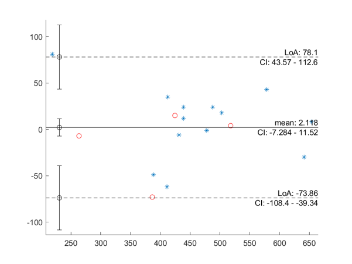

BlandAltmanPlot
Formatted documentation for the BlandAltmanPlot function.
Create a Bland-Altman plot and return a struct with results and handles.
This function does not require any toolbox, except on Matlab 6.5. The method for calculating characteristic values and the example data were taken from Bland&Altman (Lancet, 1986, i:307-310) DOI:10.1016/S0140-6736(86)90837-8
The implementation of tinv and alpha_to_Z are by Star Strider. These implementations mean you can use this function without the Statistics Toolbox except on Matlab 6.5.
Contents
Syntax
BlandAltmanPlot(var1,var2) BlandAltmanPlot(___,Name,Value) BlandAltmanPlot(___,optionstruct) h=BlandAltmanPlot(___)
Note: running without inputs runs an example.
Output arguments
| Field name | Contents | |||
| h. | .input | .alpha | alpha value used for plots and calculations | |
| .var1 | first variable used for plot | |||
| .var1 | second variable used for plot | |||
| .data | .mu | mean value of var2-var1 | ||
| .loa | lower and upper limits of agreement | |||
| .CI | .mu | lower and upper bound of the CI of the mean | ||
| .loa_lower | lower and upper bound of the CI of the lower LoA | |||
| .loa_upper | lower and upper bound of the CI of the upper LoA | |||
| .xxyy | axis extents used | |||
| .plot | .data | handle to the data plot object | ||
| .mean | handle to the mean line | |||
| .loa_lo | handle to the lower LoA line | |||
| .loa_hi | handle to the upper LoA line | |||
| .CI_lo | handle to the lower LoA errorbar | |||
| .CI_mu | handle to the mean errorbar | |||
| .CI_hi | handle to the upper LoA errorbar | |||
| .text | .mean | handle to the 'mean: %f' text object | ||
| .meanCI | handle to the 'CI: %f-%f' text object | |||
| .loa_hi | handle to the 'LoA: %f' text object | |||
| .loa_hi_CI | handle to the 'CI: %f-%f' text object | |||
| .loa_lo | handle to the 'LoA: %f' text object | |||
| .loa_lo_CI | handle to the 'CI: %f-%f' text object | |||
Input arguments
| var1,var2 | Create a Bland-Altman plot with the two entered variables. Both must be numeric vectors with 2 dimensions or fewer (so 1x1x30 sized arrays will return an error). The y-values are var2-var1, the x-values are (var1+var2)/2, unless the plot_x_mean switch is set to false, in which case var1 determines the x-values. |
| Name,Value | Change optional parameters. See below for the list of options that can be changed. |
| optionstruct | Instead of the Name,Value, parameters can also be entered in a struct. Missing fields will be set to the default values. |
Name,Value pairs
| AddDetailsText |
Add the details to the plot as text. This will add the mean and limits of agreement above the plotted lines. The confidence intervals will be added under the plotted lines if enabled by the plotCI parameter. The text elements are placed on the far right side of the plot.
default=true;
|
| alpha |
The alpha value is used for the limits of agreement, as well as for the confidence intervals.
default=0.05;
|
| plotCI |
Add the CIs of the mean and LoAs to the plot with the errorbar function. If AddDetailsText is set to true, this parameter controls both the whiskers and the text. The whiskers are plotted close to the left side of the plot.
default=true;
|
| plot_x_mean |
If set to false, the first input is used for the x-coordinate, instead of using the mean.
default=true;
|
| StoreToAppdata |
If set to true, the output of this function will be stored in the axes object with setappdata, so it can be easily retrieved. The output struct is set to the data field named 'HJW___BlandAltmanPlot___data'.
default=true;
|
| Parent/TargetAxes |
This determines the parent axes for the plots and texts. If left empty, gca is used to determine the target axes. If TargetAxes and Parent both are non-empty, TargetAxes is ignored.
default=[];
|
| TextDigitsDisplayed |
This is either the number of digits used in the text elements, or a FormatSpec that makes num2str return a non-empty char.
default=4;
|
| xxyy |
This parameter controls the axis range. It has to be a 4-element vector. Any NaN values will be auto-determined based on the input data (taking into account the value of plot_x_mean). An empty input is equivalent to [NaN NaN NaN NaN].
default=[];
|
Example: Run analysis from original paper
Run the example from the original paper by Bland&Altman.
%(use only the first measurement of each peak flow meter) var1=[494,395,516,434,476,557,413,442,650,433,417,656,267,478,178,423,427]; var2=[512,430,520,428,500,600,364,380,658,445,432,626,260,477,259,350,451]; h=BlandAltmanPlot(var1,var2); % Change the appearance of the markers: set(h.plot.data,'Marker','*') % Change a property of the axes: ax=get(h.plot.data,'Parent'); set(ax,'YTick',-100:50:100)

Compatibility, version info, and licence
| Compatibility | Windows 10 | Ubuntu 20.04 LTS | MacOS 10.15 Catalina |
| ML R2020b | works | not tested | not tested |
| ML R2018a | works | works | not tested |
| ML R2015a | works | works | not tested |
| ML R2011a | works | works | not tested |
| ML 6.5 (R13) | works | not tested | not tested |
| Octave 5.2.0 | works | works | not tested |
| Octave 4.4.1 | works | not tested | works |
Version: 1.1.0
Date: 2020-09-29
Author: H.J. Wisselink
Licence: CC by-nc-sa 4.0 ( https://creativecommons.org/licenses/by-nc-sa/4.0 )
Email = 'h_j_wisselink*alumnus_utwente_nl';
Real_email = regexprep(Email,{'*','_'},{'@','.'})